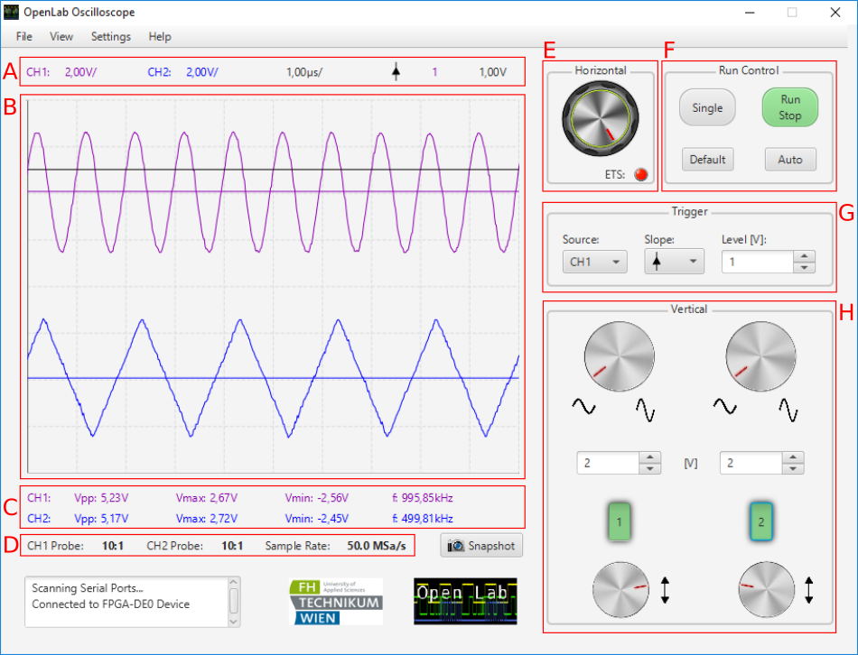

Main Window - OpenLab Oscilloscope
The following image below illustrates the main window of the graphical user interface. This image is intended to highlight the most important provided functionality of the OpenLab Oscilloscope.
- A: Adjusted Parameters Panel
- B: Signal Graph
- C: Measurement Panel
- D: Probe and Sample Rate Panel
- E: Horizontal Section
- F: Run Control Section
- G: Trigger Section
- H: Vertical Section